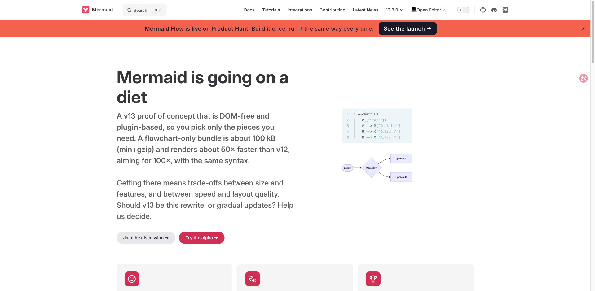

把流程图、时序图、状态图写成一段文本，由渲染器即时生成图形 —— 图从此可以进 Git、进 Code Review、进文档站。
下方是真实运行的 Mermaid 渲染器 —— 改左边文本，右边即时重画
Mermaid 的视觉语言：直角正交连线、浅色填充 + 深色描边的圆角矩形、菱形判断节点、极简排版。它刻意不做“好看”，做的是“准确且可版本化”。

一个 JavaScript 渲染库，不是编辑器。你用类 Markdown 的语法描述图，它把文本编译成 SVG。GitHub、GitLab、Notion、Obsidian、VS Code 都已内置，所以很多人“已经在用 Mermaid 而不知道”。
支持流程图、时序图、甘特图、类图、状态图、ER 图、C4 架构图、用户旅程等 20 多种图型。